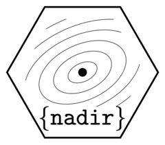

Generalized Linear Mixed-Effects (lme4::glmer) Learner
Source: R/learners.R
lnr_glmer.RdA wrapper for lme4::glmer() for use in nadir::super_learner().
Arguments
- data
A dataframe to train a learner / learners on.
- formula
A regression formula to use inside this learner.
- weights
Observation weights; see
?lm- ...
Any extra arguments that should be passed to the internal model for model fitting purposes.
Value
A prediction function that accepts newdata,
which returns predictions (a numeric vector of values, one for each row
of newdata).
Examples
# random intercepts for each level of cyl column:
suppressMessages({
# singular fit, but that's ok if all you need is prediction:
lnr_glmer(mtcars, mpg ~ (1 | cyl) + disp + wt, family = Gamma)(mtcars)
})
#> Mazda RX4 Mazda RX4 Wag Datsun 710 Hornet 4 Drive
#> 22.37679 21.40923 25.42855 18.17143
#> Hornet Sportabout Valiant Duster 360 Merc 240D
#> 15.95583 18.15668 15.69793 20.64425
#> Merc 230 Merc 280 Merc 280C Merc 450SE
#> 20.92755 19.37221 19.37221 15.91703
#> Merc 450SL Merc 450SLC Cadillac Fleetwood Lincoln Continental
#> 16.62983 16.52103 11.98428 11.88617
#> Chrysler Imperial Fiat 128 Honda Civic Toyota Corolla
#> 12.14229 27.25369 31.36113 29.97170
#> Toyota Corona Dodge Challenger AMC Javelin Camaro Z28
#> 24.28988 16.42201 16.83036 15.32176
#> Pontiac Firebird Fiat X1-9 Porsche 914-2 Lotus Europa
#> 14.66736 28.89284 25.90215 31.06245
#> Ford Pantera L Ferrari Dino Maserati Bora Volvo 142E
#> 16.66179 22.21457 16.58009 22.87493